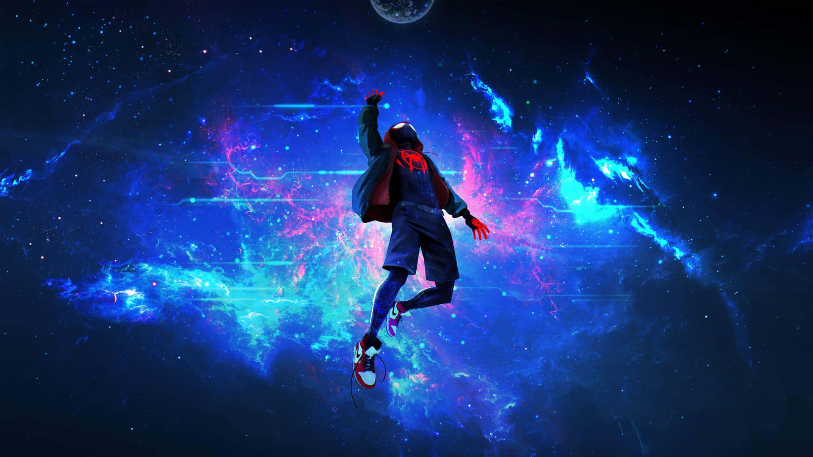

Explore the films that shaped your journey through time
Marvel Studios releases *Iron Man*, kicking off the Marvel Cinematic Universe (MCU) and changing the landscape of superhero films forever.
*Inception*, directed by Christopher Nolan, leaves audiences questioning reality with its mind-bending mix of dreams and action-packed sci-fi.
*Interstellar* takes viewers on a journey through space and time, exploring the boundaries of physics, love, and survival.
*Avengers: Endgame* smashes box office records and becomes a cultural phenomenon, bringing a satisfying conclusion to over a decade's worth of superhero storytelling.
*Dune*, directed by Denis Villeneuve, brings Frank Herbert’s sci-fi epic to the big screen with stunning visuals and a star-studded cast.
*The Batman*, directed by Matt Reeves, offers a darker, more grounded take on Gotham's Caped Crusader.
*Oppenheimer*, directed by Christopher Nolan, explores the life of J. Robert Oppenheimer and the creation of the atomic bomb.